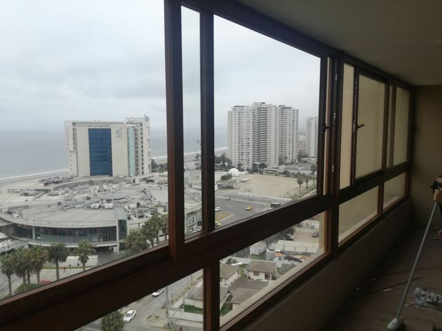
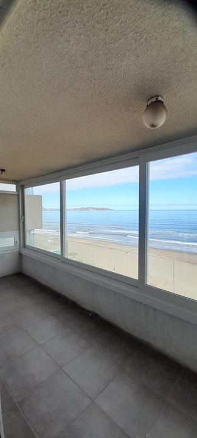
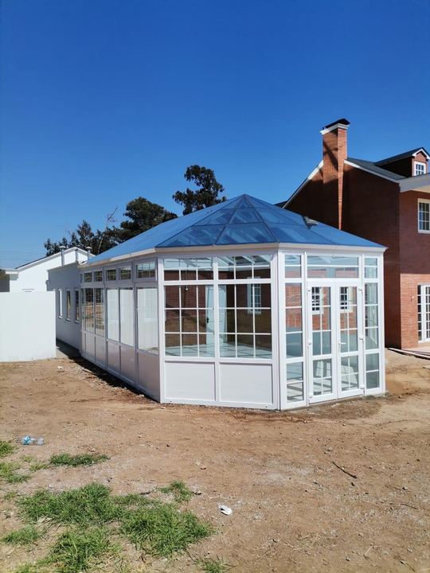

Convierte tu terraza, balcón o patio en un espacio que puedes usar todo el año.
Diseñamos, fabricamos e instalamos cierres en aluminio, PVC y cortinas de cristal,
protegidos del viento, el polvo y la humedad de la costa.
Antes de elegir material, conviene separar estas dos decisiones
La estructura
Son los perfiles que forman el marco, sostienen los vidrios y resisten el viento.
De ella depende cuánto aísla el cierre, cuánta mantención necesita y cuánto dura.
Puede ser de aluminio o de PVC.
El relleno
Es lo que cubre los vanos: los vidrios de los costados y, si la terraza no tiene losa
encima, el techo. Aquí se decide la seguridad, el control del sol y el aislamiento
del frío y del ruido.
Un cierre de terraza por partes
1Marco: la estructura de perfiles de aluminio o PVC que se fija a la losa, al piso y a los muros.
2Hojas móviles: correderas o plegables, para abrir la terraza en los días buenos.
3Vidrios: simples, termopanel, laminados o templados, según el uso y la seguridad.
4Losa o techo: la losa del piso de arriba o, si la terraza es descubierta, un techo de policarbonato, panel o vidrio.
5Riel y drenaje: guía las hojas y evacúa el agua de lluvia hacia afuera.
Disfruta más tu terraza
Cierre de terraza con vista a la bahía
¿Qué material elegir para la estructura?
Cada uno tiene su lugar según el uso que le darás a la terraza

Aluminio
Liviano y resistente, permite perfiles delgados y paños de vidrio grandes, así entra más luz y se aprovecha la vista. Es la opción más versátil en diseño y precio.
Perfiles finos y estética moderna
Ideal para grandes ventanales y correderas
Muy buena relación precio / tamaño
Ojo: el aluminio conduce el frío. Combinado con termopanel aísla mucho mejor y reduce la condensación.

PVC
El que mejor aísla del frío y del ruido gracias a sus perfiles multicámara. No se oxida con la brisa marina y prácticamente no requiere mantención.
Paños de vidrio templado sin marcos verticales que se deslizan y se pliegan a un costado. Cuando están cerradas casi no se notan, y abiertas dejan la terraza totalmente libre.
Vista panorámica sin perfiles
Se abren casi por completo
Mantienen la estética de la fachada
Protegen muy bien del viento y la lluvia, pero no son herméticas: aíslan menos del frío y del ruido que un cierre con termopanel.

Solar room
Cuando la terraza está a la intemperie, se construye una estructura completa vidriada, con muros y techo, que crea una habitación nueva llena de luz.
Estructura autoportante a medida
Costados vidriados y techo integrado
Gana metros útiles para la casa
Comparativa rápida
Una guía general para orientar tu decisión
Característica
Aluminio
PVC
Cortina de cristal
Aislamiento térmico
Bueno con termopanel
Excelente
Bajo
Aislamiento acústico
Medio
Alto
Bajo
Grosor de perfiles
Delgados, más vidrio
Más anchos
Sin perfiles verticales
Resistencia a la salinidad
Buena (perfil anodizado o pintado)
Muy alta, no se oxida
Buena
Mantención
Baja
Mínima
Baja (limpiar rieles)
Ideal para
Aprovechar la vista y la luz, paños grandes
Usar la terraza como habitación todo el año
Vista panorámica y terraza abierta
Tipos de vidrio
El vidrio es la mayor parte de la superficie de un cierre
Termopanel (DVH)
Dos vidrios con una cámara de aire sellada. Es lo mínimo recomendable si quieres que la terraza sea un espacio temperado y con menos ruido.
Laminado de seguridad
Si se quiebra, los trozos quedan adheridos a una lámina interior. Muy recomendado con niños, mascotas o paños que llegan hasta el piso.
Templado
Varias veces más resistente que un vidrio común y, al romperse, se fragmenta en trozos pequeños sin filo. Se usa en puertas y paños grandes.
Control solar
Refleja parte del calor del sol. Útil en terrazas con orientación norte o poniente, que en verano se calientan mucho.
Si tu terraza necesita techo
Opciones según cuánta luz y cuánto aislamiento buscas
Policarbonato
Liviano, económico y deja pasar la luz. Protege de la lluvia y el sol, aunque aísla menos y suena más con la lluvia fuerte.
Panel aislado
El de mejor aislamiento térmico y acústico. No deja pasar luz, por eso conviene cuando la terraza pasa a ser una habitación más.
Vidrio
Máxima luminosidad y vista al cielo. Se recomienda vidrio laminado y considerar alguna protección solar para el verano.
Te asesoramos sobre qué techo conviene según tu estructura y orientación.
Antes de cerrar tu terraza
Tres puntos que conviene revisar desde el inicio
Permisos y copropiedad
En departamentos y condominios, revisa el reglamento de copropiedad, ya que muchos exigen un modelo o color uniforme de cierre. Según el caso, la municipalidad puede pedir un permiso de obra menor.
Orientación
Una terraza al sur recibe poco sol y pide más aislamiento. Al norte o al poniente conviene control solar y buena ventilación para que no se acumule calor.
Uso que le darás
No es lo mismo protegerse del viento para tender ropa que crear un living o una oficina. El uso define el material, el vidrio y el presupuesto.
Nuestra recomendación según el caso
Combinaciones que mejor funcionan
Living u oficina todo el año
PVC con termopanel y, si hace falta, techo de panel aislado. Máximo abrigo y silencio.
Vista al mar o al valle
Cortinas de cristal para no perder la vista, o aluminio con paños grandes y termopanel si buscas más abrigo.
Protección básica
Aluminio con vidrio simple y techo de policarbonato. Corta el viento, el polvo y la lluvia a menor costo.
Terraza descubierta
Solar room con estructura completa, costados vidriados y techo, para ganar una habitación nueva.
¿Qué es mejor para cerrar una terraza, aluminio o PVC?
Si la terraza será una habitación más y quieres el mayor abrigo y silencio, PVC. Si lo importante es la luz y paños de vidrio grandes, aluminio. Y si quieres la vista completa sin marcos, cortinas de cristal. Te ayudamos a elegir según tu proyecto.
¿Las cortinas de cristal aíslan del frío?
Cortan el viento y la lluvia, pero como los paños no llevan marco ni termopanel, aíslan menos que un cierre de aluminio o PVC con DVH. Son ideales para disfrutar la terraza y la vista; si necesitas un espacio temperado todo el año, te recomendamos termopanel.
¿Necesito permiso para cerrar mi terraza?
Depende del tipo de vivienda y de la comuna. En edificios y condominios hay que respetar el reglamento de copropiedad, y en algunos casos la municipalidad exige un permiso de obra menor. Te recomendamos consultarlo antes de empezar.
¿Se puede abrir el cierre en verano?
Sí. Con hojas correderas o abatibles puedes abrir gran parte de la terraza cuando hace buen tiempo y cerrarla cuando hay viento o frío.
¿El cierre de terraza resiste la brisa marina?
Sí. El PVC no se oxida y el aluminio con buena terminación resiste bien la salinidad. Además usamos herrajes adecuados para el clima costero.
¿Se forma condensación en una terraza cerrada?
Con vidrio simple es más probable. El termopanel la reduce bastante porque el vidrio interior queda más tibio. También ayuda ventilar a diario.
¿Cuánto cuesta cerrar una terraza?
Depende de los metros, el material, el tipo de vidrio y si necesita techo. Visitamos tu terraza, tomamos medidas y te enviamos una cotización detallada.
¿Quieres cerrar tu terraza?
Envíanos una foto y las medidas aproximadas, y te preparamos una cotización.